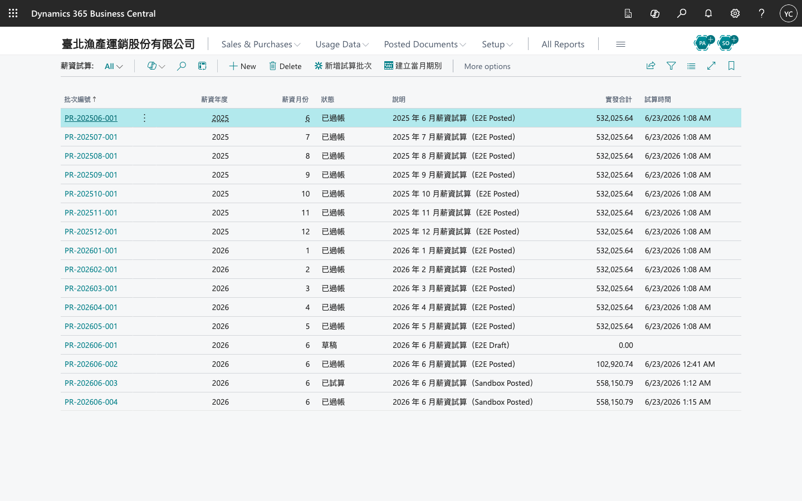
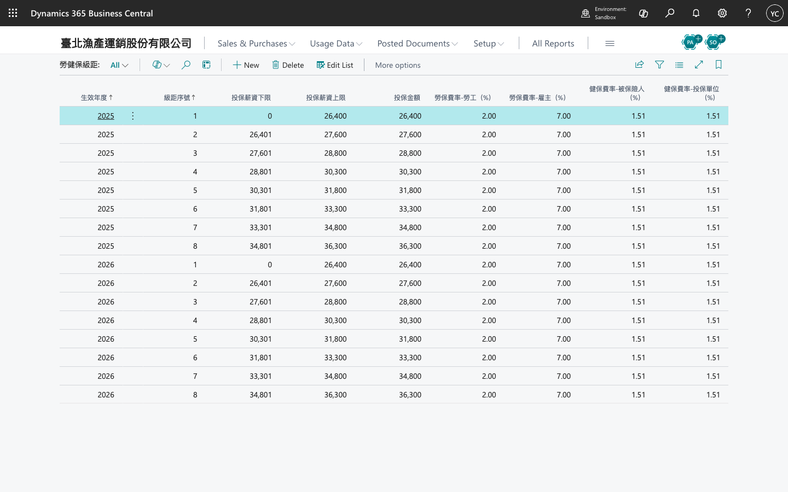

薪資操作手冊
一、常用頁面
| 功能 | 搜尋關鍵字 |
|---|---|
| 薪資設定 | 薪資設定 / TW Payroll Setup |
| 勞健保級距 | 勞健保級距 |
| 假別 | 假別 / TW Leave Types |
| 請假單 | 請假單 / TW Leave Requests |
| 加班申請 | 加班申請 / TW Overtime Requests |
| 薪資期別 | 薪資期別 / TW Payroll Periods |
| 薪資試算 | 薪資試算 / TW Payroll Runs |
| 員工（台灣欄位） | Employees → 台灣薪資群組 |
二、員工主檔
- 開啟員工卡片。
- 於 台灣薪資 群組填寫：身分證、投保金額、本薪、班別、級距年度等。
- 執行 套用勞健保級距，依投保金額對應當年度級距。
三、假勤（選用）
假別
於假別維護特休、病假、生理假等；可設定年度上限、是否併入病假等規則。
請假流程
新增請假單（草稿）→ 填員工、假別、起迄 → 送審 → 核准（或駁回）
生理假依薪資設定之「生理假不併入病假天數」自動判斷是否併入病假額度。
加班
於加班申請建立單據，核准後可供薪資試算參考（依貴司設定與 ISV 端點）。
四、薪資試算與過帳
- 薪資期別：開啟目標月份期別（例如 2026-06）。
- 薪資試算：新增試算批次 → 建議員工（或手動加明細）→ 計算。
- 檢視明細：本薪、加班、勞健保扣繳、實發等。
- 過帳：確認無誤後過帳至 General Journal（依薪資設定之科目與日記帳批次）。
若已設定 Payroll ISV Endpoint，計算步驟可能改由外部引擎回傳結果；Endpoint 空白時使用延伸模組內建邏輯。

五、勞健保級距
於勞健保級距維護當年度表；員工卡片執行「套用勞健保級距」對應投保金額。

六、打卡匯入（選用）
支援打卡資料匯入與跨夜班歸屬日（依薪資設定之 Night Shift Cutoff Hour）。詳細匯入格式請洽實施顧問或 API 文件。
七、建置檢查
- 薪資設定五科目與日記帳批次已填
- 級距年度與勞健保級距表一致
- 員工已套用級距
- 試算批次可計算且過帳成功